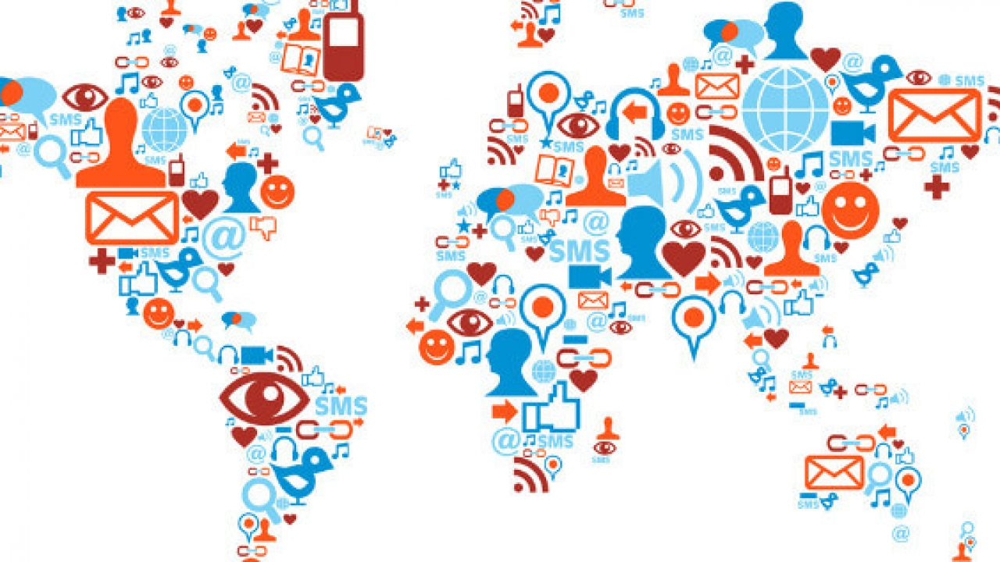

Fue en la década de 1990, con internet disponible, que la idea de red social emigró también al mundo virtual. El sitio SixDegrees.com, creado en 1997, es considerado por muchos como la primera red social moderna, ya que permitía a los usuarios tener un perfil y agregar a otros participantes en un formato parecido a lo que conocemos hoy. El sitio pionero, que en su auge llegó a tener 3,5 millones de miembros, se cerró en 2001, pero ya no era el único. A principios del milenio, empezaron a surgir páginas dirigidas a la interacción entre usuarios: Friendster, MySpace, Orkut y hi5 son algunos ejemplos de sitios ilustres en el período. Muchas de las redes sociales más populares hoy en día también surgieron en esa época, como LinkedIn y Facebook. Pocas personas imaginaban que las redes sociales tendrían un impacto tan grande como lo poseen hoy. Pero el deseo de conectarse con otras personas desde cualquier lugar del mundo ha hecho que las personas y las organizaciones estén cada vez más inmersas en las redes sociales. No en vano, una encuesta de Hootsuite apunta que, hasta finales de 2016, 2.800 millones de personas usaban redes sociales en el mundo. En este contexto, las empresas también han visto la posibilidad de comunicarse con su público objetivo de forma más intensa, estando presentes en las redes sociales. Para darse una idea, una encuesta de Social Media Trends de 2017 afirma que la mayoría de las empresas tienen uno (31,7%) o dos (31%) profesionales involucrados con redes sociales.
El ser humano tiene la necesidad de relacionarse. Por eso, las redes sociales existen desde siempre. Pero aquí vamos a mostrar la historia de las redes sociales en el ambiente online. Y fue exactamente por querer encontrar a las personas que las redes sociales surgieron. ¡Imagínate lograr contactar a tus amigos del colegio fácilmente por internet! Lo que actualmente es súper fácil y asequible, era una tremenda novedad en los años 90. Con esta idea surgió, en 1995, la primera idea de red social del mundo, ClassMates, que aún existe. Pero si pensamos en una red social como las que tenemos hoy, con chat, intercambio de opiniones, perfiles y publicaciones, Six Degrees fue la primera, en 1997. Aunque no tuvo tanto éxito como Friendster, cuya finalidad era ayudar a los usuarios a encontrar pareja y que se hizo real en 2002. Consiguió 3 millones de usuarios en tan solo algunos meses, teniendo su fin decretado por el servidor, que no aguantaba el número arrollador de accesos. En el mismo año se lanza LinkedIn, la red social profesional que hoy sigue siendo la más popular. En 2003 nace MySpace, que destronó a Friendster en poco tiempo, y en el 2004, surge Facebook, que para el 2008 ya le había quitado el primer lugar a MySpace. Facebook surgió como una plataforma para conectar estudiantes de la Universidad de Harvard, EEUU, y hoy se mantiene invicta como la red social más popular del mundo. Sin embargo, las demás redes han sabido reinventarse, lo que las ha mantenido vigentes hasta hoy.